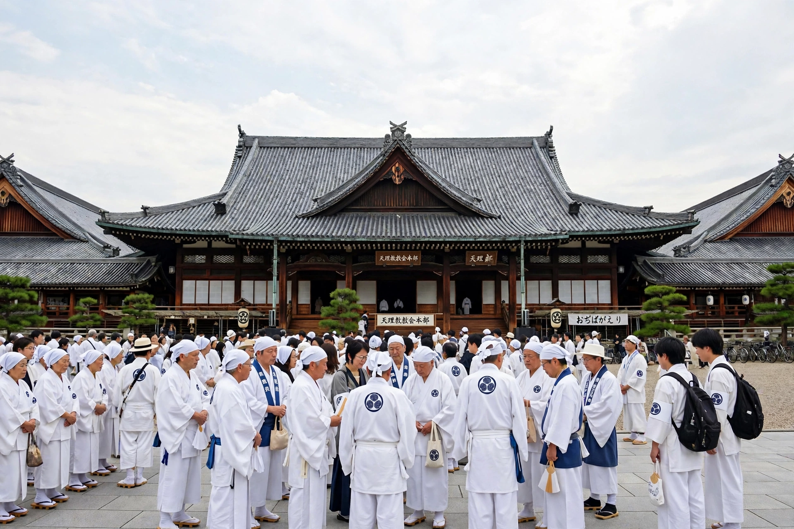

Japanese new religions

Japanese new religions (Japanese: 新宗教, shinshūkyō) are new religious movements established in Japan. In Japanese, they are called shinshūkyō ("new religions") or shinkō shūkyō ("newly arisen religions"). Scholars in Japan distinguish them from ancient religions and from sects of established traditions. Many are syncretic, combining elements of Shinto, Buddhism, folk religion and sometimes Christianity.
History
The first wave arose in the late Edo and early Meiji periods, including Tenrikyo (founded 1838 by Nakayama Miki), Kurozumikyo and Konkokyo. Defeat in the Second World War and the Allied-imposed religious freedom of 1945 produced a second, larger wave — sometimes called the "rush hour of the gods" — including Soka Gakkai, Rissho Kosei-kai, PL Kyodan and Seicho-no-Ie. A further wave of "new new religions" (shin-shinshūkyō) appeared in the 1970s and 1980s, among them Aum Shinrikyo, which became notorious for the 1995 Tokyo subway sarin attack, after which public suspicion of new religions deepened considerably.
Characteristics
Common features include a charismatic founder regarded as a living kami or prophet, promises of this-worldly benefits (genze riyaku) such as healing and prosperity, ancestor veneration, and mass-media evangelism. Membership estimates vary widely; at their mid-twentieth-century peak, new religions may have embraced a substantial minority of the Japanese population, though figures claimed by the movements themselves are often higher than independent estimates.
Major movements
Among the largest are Soka Gakkai, a lay Nichiren Buddhist movement; Tenrikyo, centred on Tenri City; Omoto, influential in the pre-war period and associated with Esperanto; and the Federation of New Religious Organizations of Japan, founded in 1951, which coordinates many groups.
See also: Religion in Japan, Syncretism